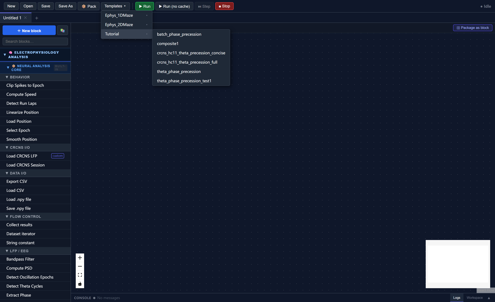
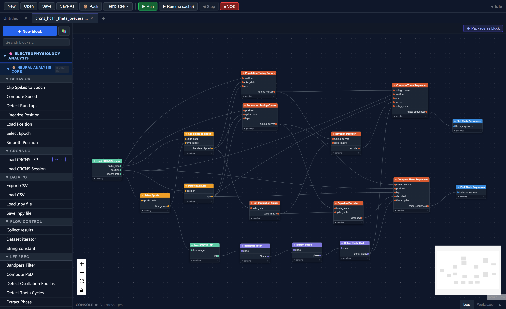
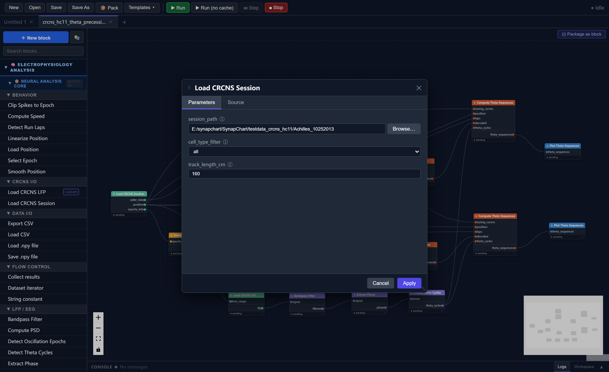
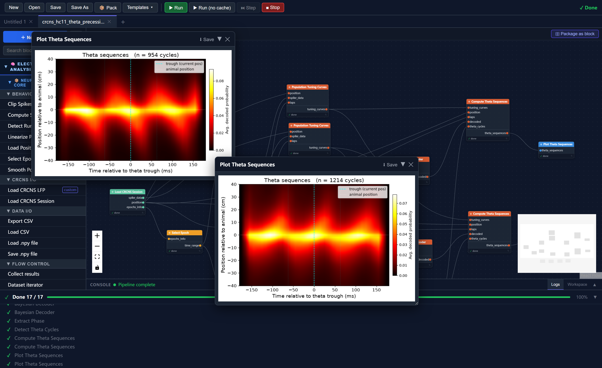

Tutorial 3: Theta Sequences with Real Hippocampal Data
This tutorial runs a complete theta sequence analysis on a real hippocampal recording from the publicly available CRCNS HC-11 dataset. Unlike the synthetic data in Tutorials 1–2, this pipeline works directly from the original .mat and .eeg files with no preprocessing required.
By the end you will have:
- Loaded a real CRCNS HC-11 recording session into SynapChart
- Understood how running direction is used as a behavioral state key to drive parallel analysis branches
- Computed direction-specific population tuning curves, Bayesian-decoded posteriors, and averaged theta sequences
- Produced a theta sequence heatmap for each running direction
Estimated time: 20–30 minutes
Prerequisites: None — this tutorial is self-contained
Data: One session from the CRCNS HC-11 dataset (free account required at crcns.org)
What are theta sequences?
During active navigation, hippocampal place cells fire in sequences within individual theta cycles (~8 Hz): cells representing locations ahead of the animal fire early in the cycle, cells at the current location fire near the trough, and cells representing locations behind fire late. Averaging decoded posteriors across many theta cycles and aligning them to the animal's current position reveals a characteristic diagonal stripe — the theta sequence — showing the hippocampus sweeping through a spatial trajectory on every cycle.
Part 1 — The CRCNS HC-11 Dataset
CRCNS HC-11 contains simultaneous multi-electrode recordings from hippocampal area CA1 and the medial entorhinal cortex in rats running on a linear track. Each session includes multi-unit spike times, 1-D linearised position, and wideband LFP.
To download:
- Create a free account at crcns.org
- Navigate to HC → HC-11 and download one session. This tutorial uses Achilles_10252013
- Extract the archive. You should have a folder like:
Achilles_10252013/
Achilles_10252013_sessInfo.mat ← session metadata, spikes, position, epochs
Achilles_10252013.eeg ← wideband LFP (all channels, ~11 GB)
Achilles_10252013.xml ← probe geometry and sampling rate metadata
Disk space
The .eeg file can be 5–15 GB. The pipeline loads only the MazeEpoch portion (typically < 30 minutes) so peak RAM usage stays manageable, but make sure you have enough free disk space to extract the archive.
Part 2 — Load the Template
In the toolbar click Templates, expand the Tutorial category, and select crcns_hc11_theta_precession_concise.

The canvas loads a 17-node pipeline arranged in two parallel analysis branches that share a common data-loading trunk:
Load CRCNS Session ──► Select Epoch ──► Clip Spikes to Epoch ──────────────────────┐
│ │
└──► position ──────────────────────────────────────────────────────────┐ │
│ │ │
└──► Detect Run Laps ────────────────────────────────────────────────┐ │ │
│ │ │
Load CRCNS LFP ──► Bandpass (6–12 Hz) ──► Extract Phase ──► Detect Theta Cycles │ │
│ │ │
Clip Spikes ──► Bin Population Spikes ──────────────────────────────────────┐ │ │ │
│ │ │ │
┌─ Dir 1 branch ─────────────────────────────┘ │ │ │
│ Tuning Curves (dir=1) ◄────────────────────────┘ │
│ │ │
│ Bayesian Decoder ◄── spike_matrix │
│ │ │
│ Theta Sequences (dir=1) ◄── theta_cycles, laps ──┘
│ │
│ Plot Theta Sequences
│
└─ Dir 2 branch (identical, direction=2)
...
Plot Theta Sequences

Part 3 — Set the Session Path
Only two parameters need to be changed. Double-click each block and update its session_path:
| Block | Parameter | Value |
|---|---|---|
| Load CRCNS Session | session_path |
/path/to/Achilles_10252013 |
| Load CRCNS LFP | session_path |
/path/to/Achilles_10252013 |
Both blocks point to the same folder. Everything else is pre-configured for the HC-11 dataset.

Other parameters you can tune
- Load CRCNS Session →
cell_type_filter:all(default),pyramidal, orinterneuron - Load CRCNS Session →
track_length_cm: set to the known track length (default 160 cm for HC-11) - Load CRCNS LFP →
channels: which LFP channel to use (default0)
Part 4 — The Shared Trunk
The first group of blocks loads and prepares the data. These run once and feed both direction branches.
4.1 Load CRCNS Session
Reads the *_sessInfo.mat file and returns:
| Output | Contents |
|---|---|
spike_data |
Multi-cell spike times with per-spike cell IDs |
position |
Linearised 1-D position (cm) at ~39 Hz, covering the full recording |
epochs_info |
Epoch boundaries: MazeEpoch, PREEpoch, POSTEpoch, sleep epochs |
4.2 Select Epoch → Clip Spikes to Epoch
Select Epoch extracts the MazeEpoch time window ([t_start, t_end]) from the epoch boundaries. This window is passed to two blocks:
- Load CRCNS LFP — uses it to load only the maze-epoch LFP slice, avoiding reading the full ~11 GB file into memory
- Clip Spikes to Epoch — restricts the spike data to the same window
4.3 Detect Run Laps
Scans the position trace and identifies continuous high-velocity running bouts (laps) that exceed the speed (5 cm/s), duration (1 s), and distance (30 cm) thresholds.
Each detected lap is labelled with a direction:
- Direction 1 — descending runs (animal moves from high position to low position)
- Direction 2 — ascending runs (animal moves from low to high)
The laps object stores all detected bouts and is passed to both direction branches.
4.4 LFP Processing: Bandpass → Phase → Theta Cycles
| Block | What it does |
|---|---|
| Bandpass Filter (6–12 Hz) | Isolates the theta oscillation from the raw LFP |
| Extract Phase | Computes instantaneous phase via the Hilbert transform (0 = peak, ±π = trough) |
| Detect Theta Cycles | Finds individual peak-to-peak cycles (expected 4–12 Hz, so 83–250 ms duration) |
The cycle boundaries array (N_cycles × 2) is shared by both direction branches.
4.5 Bin Population Spikes
Converts the clipped multi-cell spike times into a (n_cells × n_time_bins) spike count matrix using 20 ms bins — the input format required by the Bayesian decoder.
Part 5 — Running Direction as a Behavioral State
This is the key design pattern in the template.
On a linear track, hippocampal cells are direction-selective: a cell's firing rate at a given position often differs substantially between inbound and outbound runs. Computing a single tuning curve that pools both directions would mix these two firing patterns and degrade decoding accuracy.
The template handles this by treating running direction as a behavioral state key: instead of one analysis branch, there are two identical branches that differ only in which laps they use.
How it works
The direction parameter appears in three blocks per branch:
| Block | direction parameter |
Effect |
|---|---|---|
| Population Tuning Curves | 1 or 2 |
Occupancy and spike counts are computed only during laps of this direction |
| Compute Theta Sequences | 1 or 2 |
Only theta cycles whose midpoint falls inside a lap of this direction are accumulated |
| Bayesian Decoder | (none) | Uses whichever tuning curves it receives — the direction is implicitly set by the tuning curve input |
Setting direction="1" in a branch and direction="2" in the other is sufficient to route each branch to the correct behavioral epochs. The blocks handle the filtering internally — no manual data splitting is required.
What you get
Each branch produces an independent theta sequence heatmap reflecting the neural dynamics during that running direction:
- Direction 1 heatmap: averaged decoded posteriors across descending laps, aligned to the animal's position at each theta trough
- Direction 2 heatmap: same for ascending laps
Comparing the two heatmaps lets you assess whether theta sequences are symmetric across directions — a question with implications for the directionality of hippocampal trajectory coding.
Choosing what to visualize or compare
The template visualizes both directions independently. You can adapt this in several ways:
- Use only one direction: delete one branch and set
direction="both"in the other if you want all laps pooled - Average the two heatmaps: add a custom block that receives both
theta_sequencesoutputs and averages the matrices - Add more behavioral states: if you have multiple epochs (e.g., separate sleep and wake periods) you can duplicate branches for each, connecting a different epoch's
lapsortime_rangeto each copy
This pattern generalises to any categorical behavioral variable — running speed bands, reward zones, correct vs. error trials — wherever separate tuning curves and averaged dynamics are scientifically meaningful.
Part 6 — Run and Interpret
Click Run. The run progress panel expands and shows blocks executing in order. Typical runtime for a full MazeEpoch session on a modern laptop:
| Stage | Approx. time |
|---|---|
| Load session + LFP | 5–20 s (depends on disk speed) |
| Bandpass + phase + cycles | < 5 s |
| Tuning curves (× 2) | 5–15 s |
| Bayesian decoding (× 2) | 10–30 s |
| Theta sequences (× 2) | 10–30 s |
Caching accelerates re-runs
After the first run, every block caches its output. Changing only a plotting parameter re-runs only the plot block — all upstream computation is loaded from cache instantly.
When complete, two visualization windows appear — one per direction.
Reading the theta sequence heatmap

| Axis | What it shows |
|---|---|
| x-axis | Time relative to the theta trough (ms); 0 = trough = animal's current position |
| y-axis | Position relative to the animal (cm); positive = ahead, negative = behind |
| Colour | Average decoded probability across all cycles of this direction |
A strong theta sequence appears as a diagonal stripe running from bottom-left to top-right: early in the cycle (negative time) the decoded location is behind the animal, and late in the cycle (positive time) it is ahead. This look-ahead effect reflects the hippocampus sweeping through a prospective spatial trajectory on each theta cycle.
The cyan dashed vertical line marks the trough (t = 0). The white dotted horizontal line marks the animal's actual position (relative position = 0). A diagonal of high probability crossing both reference lines is the hallmark of a theta sequence.
Interpreting weaker sequences
Theta sequences are typically clearest in the first MazeEpoch and in animals with strong, well-isolated place cells. If the heatmap looks flat or noisy, try the Achilles or Buddy animals which tend to have the largest cell counts in HC-11.
Does this match the literature?
The diagonal look-ahead structure you should see here is the well-established signature of hippocampal theta sequences, first characterised on linear tracks by Skaggs et al. (1996) and quantified as within-cycle trajectory sweeps by Foster & Wilson (2007) and Feng, Silva & Foster (2015). The HC-11 dataset used here is the same recording published in Grosmark & Buzsáki (2016). Concretely, a correct run should reproduce:
- a positive diagonal (decoded position behind the animal early in the cycle, ahead of it late in the cycle) crossing the trough (t = 0) and zero-lag lines;
- the effect present in both running directions (the two heatmaps should look broadly similar in structure, if not identical in strength);
- a flat/uniform map if you shuffle the cycle-to-lap assignment — a useful sanity check that the structure is not an artefact of the averaging.
If your heatmap shows a diagonal like this, the decoder, phase extraction, and theta-cycle detection are all behaving as intended. See References below for the source papers.
Part 7 — Adjustable Parameters
Once you have run the pipeline once, you can experiment with the following parameters without re-running the expensive upstream stages (the cache handles it):
Theta sequence accumulation
| Parameter | Default | Effect |
|---|---|---|
half_window_ms |
180 | Width of the time window around each trough. Increase to see more context; decrease to focus on a single cycle |
n_time_per_cycle |
36 | Temporal resolution within the window (~10 ms per bin at default) |
n_pos_lags |
41 | Width of the look-ahead/behind axis in position bins |
min_speed |
5 cm/s | Minimum running speed to include a cycle; increase to restrict to fast runs |
Visualization
| Parameter | Default | Effect |
|---|---|---|
ylim_cm |
40 | Half-range of the y-axis; increase for long-range sequences |
colormap |
hot |
Matplotlib colormap name |
theta_freq_hz |
8 | Used to draw the optional ±½-cycle reference lines |
save_path |
(empty) | Set to a .png path to save the figure to disk |
Summary
In this tutorial you:
- Downloaded a session from the public CRCNS HC-11 dataset and loaded it with two blocks — no preprocessing required
- Understood the shared analysis trunk: epoch selection, spike clipping, LFP theta processing, and spike binning
- Learned how running direction acts as a behavioral state key — the pipeline automatically restricts occupancy, spike counts, and theta cycle accumulation to laps of the correct direction, giving you direction-specific tuning curves, decoded posteriors, and theta sequence heatmaps
- Ran the pipeline and interpreted the resulting heatmaps, where a diagonal stripe from lower-left to upper-right indicates the hippocampus sweeping through a prospective spatial trajectory on each theta cycle
- Saw how to extend the pattern to other behavioral states by duplicating branches and changing the
direction(or epoch) parameter
Next Steps
- Block Reference — full documentation of all built-in blocks and their parameters
- Flow Control Blocks — Dataset Iterator and Collect Results for batch processing across multiple sessions
- Composite Blocks — package this pipeline as a reusable block (Tutorial 1 covers the basics)
References
Dataset
- Grosmark, A.D., Long J. & Buzsáki, G. (2016). Recordings from hippocampal area CA1, PRE, during and POST novel spatial learning. CRCNS.org. https://doi.org/10.6080/K0862DC5
- Grosmark, A.D. & Buzsáki, G. (2016). Diversity in neural firing dynamics supports both rigid and learned hippocampal sequences. Science 351(6280), 1440–1443.
Theta sequences
- Skaggs, W.E., McNaughton, B.L., Wilson, M.A. & Barnes, C.A. (1996). Theta phase precession in hippocampal neuronal populations and the compression of temporal sequences. Hippocampus 6(2), 149–172.
- Foster, D.J. & Wilson, M.A. (2007). Hippocampal theta sequences. Hippocampus 17(11), 1093–1099.
- Feng, T., Silva, D. & Foster, D.J. (2015). Dissociation between the experience- dependent development of hippocampal theta sequences and single-trial phase precession. Journal of Neuroscience 35(12), 4890–4902.